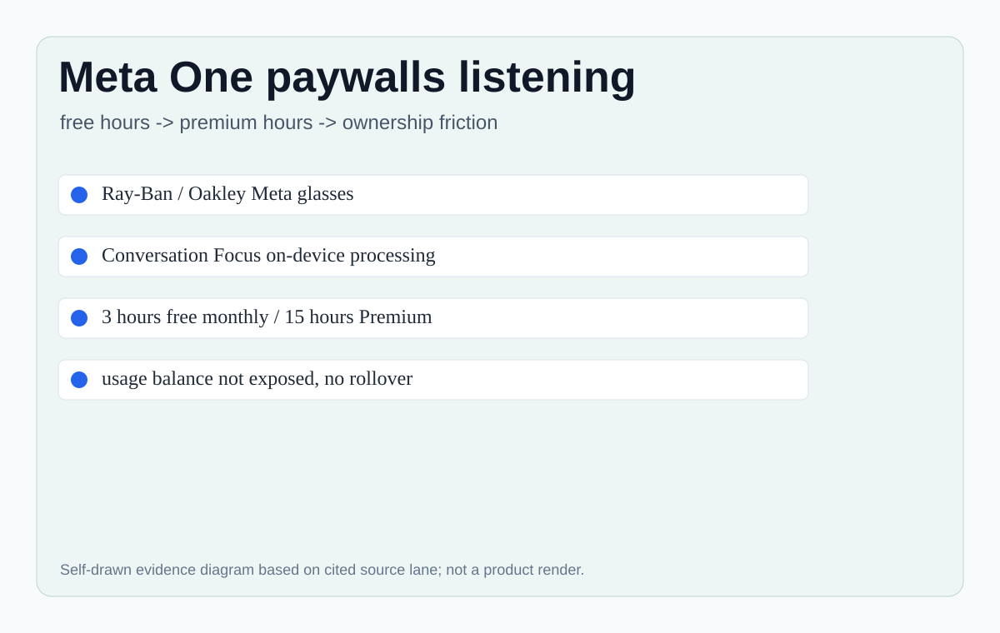
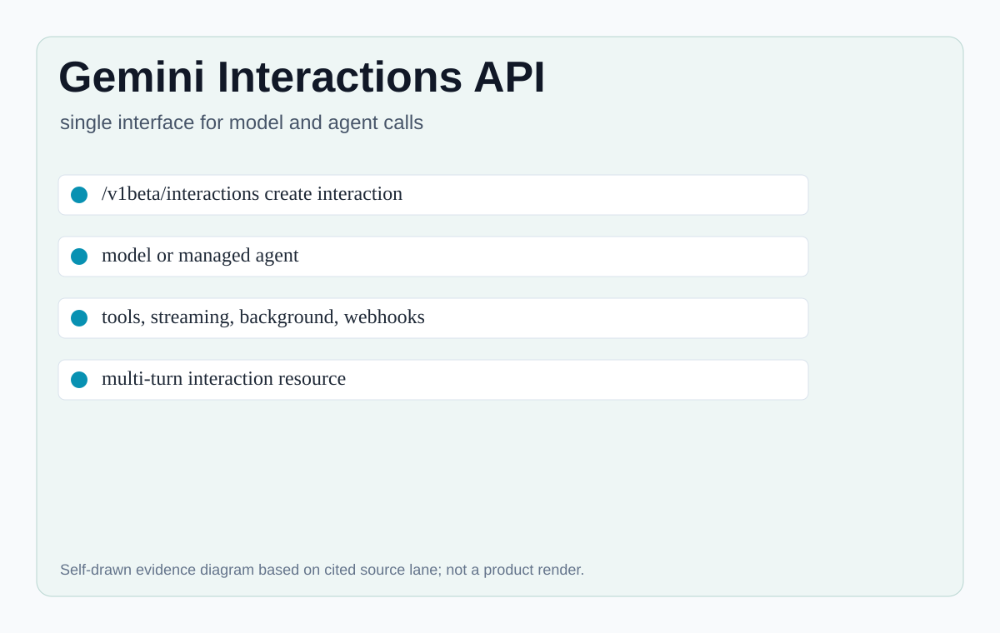
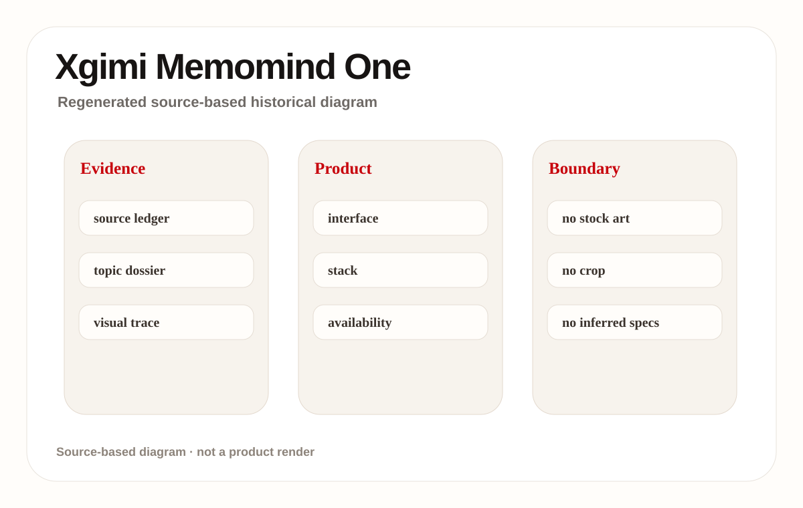
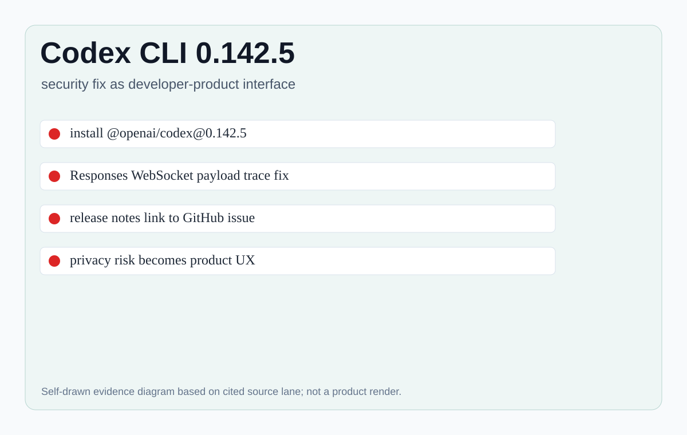
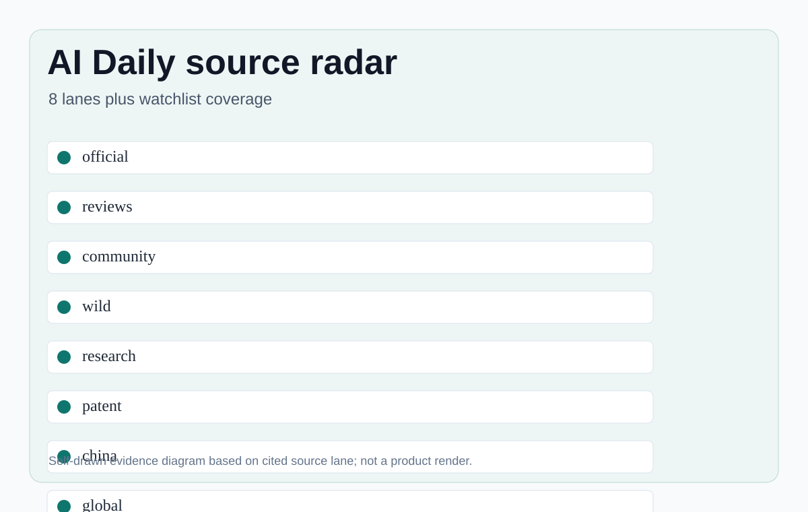
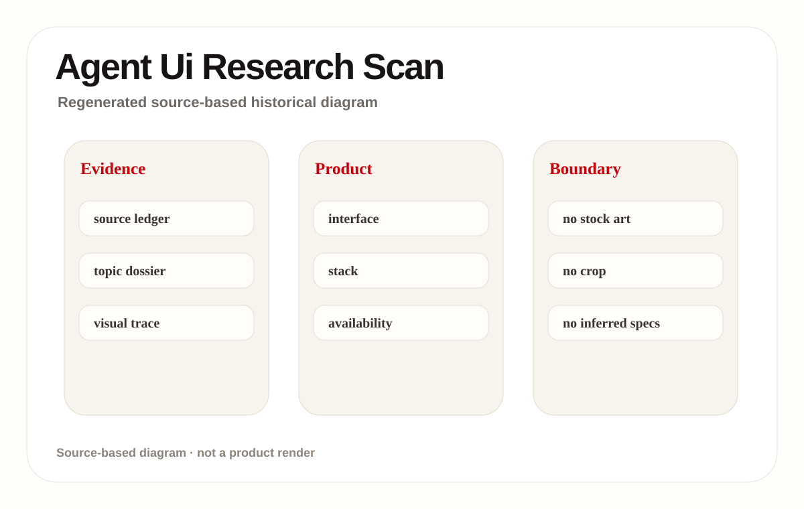
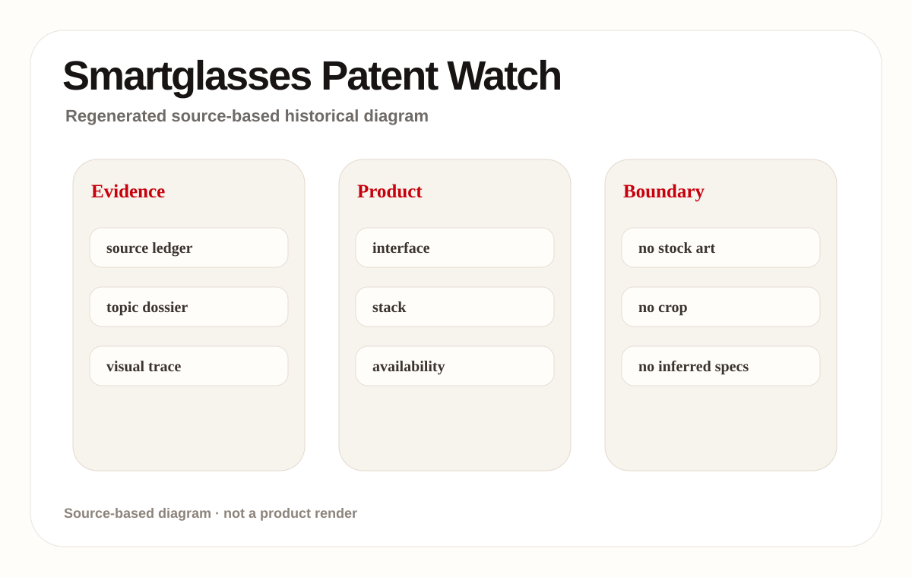
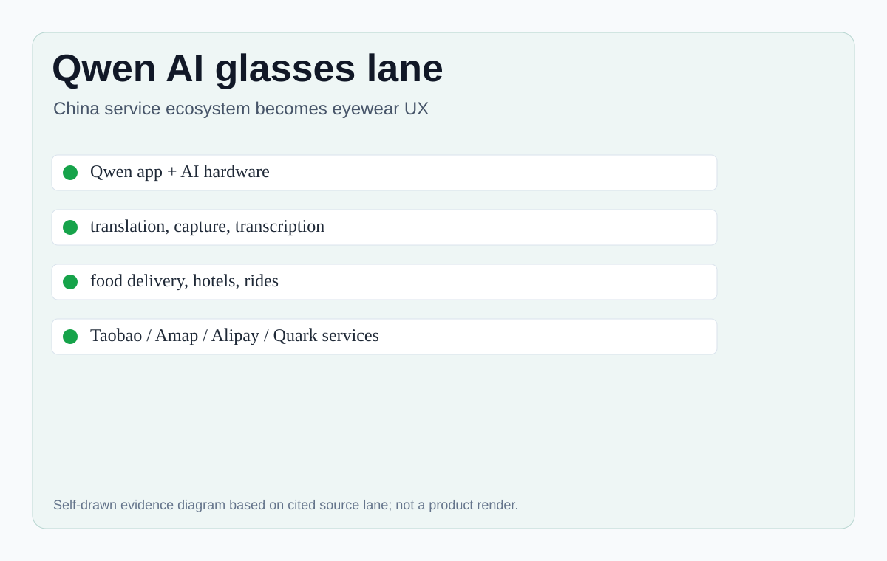
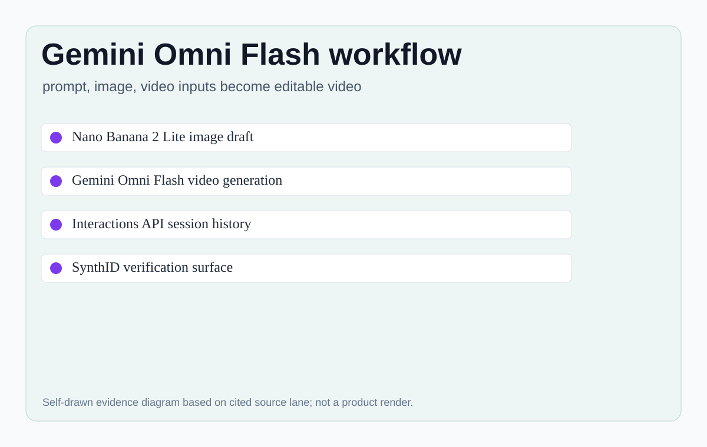

Meta One / Conversation Focus 在本期被归类为AI smart-glasses subscription and audio-assist feature。证据强度是 confirmed product；只有来源明确写到的规格、价格、区域、传感器、芯片、OS/API 版本、可用性和用户原声才进入事实层。没有写出的部分统一标为 source not stated。本期关注它作为用户界面的真实触点：用户从哪里进入、怎样发起任务、系统读取什么、何时收费或确认、失败后怎样恢复。
01
2026-07-02 · America/Toronto
AI Daily
AI Daily 2026-07-02：当眼镜功能开始计时收费
Conversation Focus 成为端侧 AI 功能商业化的清晰样本。
本期把用量、订阅、设备所有权和可穿戴 HCI 放在同一张版面。
Google 的生成媒体/API 与中国眼镜生态作为对照。
AI hardwaresmart glassesagent UXdeveloper surfaceChina scanpatent watchresearch scancommunity friction
来源： 封面原文

02
今日导航
先看结构，再看证据
今天按八条线读：官方产品、媒体评测、社区摩擦、野生产品、研究、专利、中国与海外。
03
大厂官方
大厂官方
Official Desk / 大厂官方
confirmed product · confirmed product
Meta One 把 Conversation Focus 变成用量化眼镜功能
developer surface · developer surface
Gemini Interactions API 把 agent 调用包装成可追踪资源
04
Official Desk / 大厂官方
大厂官方
confirmed product · confirmed product
2026-07-02 scan
Meta One 把 Conversation Focus 变成用量化眼镜功能
产品: Meta One / Conversation Focus. Meta One 把 Conversation Focus 变成用量化眼镜功能。本条按 confirmed product 处理，事实来自本页来源；未披露参数写 source not stated。
交互流程：A wearer opens the Meta AI app, enters Accounts Center, checks Subscriptions, and sees Meta One. Conversation Focus can be used without a subscription until the monthly allowance is reached; Meta Help states 3 free hours per month and 15 hours per month for Meta One Premium. Remaining balance is not currently shown and unused hours do not roll over. The product moment is unusually sharp because the user is not asking a cloud model to generate text; they are using an already-owned wearable to make voices clearer in noisy space. 对产品设计最关键的不是“有 AI”，而是用户是否能在 16:9 的实际页面和真实设备里看懂状态。入口、权限、上下文、执行、反馈、停止、撤销是同一条链路；任何一环被隐藏，用户都会把自动化当成不可控黑箱。
硬件/API/系统栈：Ray-Ban Meta and Oakley Meta glasses; Meta AI app; Meta Accounts Center; on-device Conversation Focus processing; Meta One Premium usage allowance; source not stated for chipset, battery, storage, microphones, exact DSP pipeline, OS version and regional expansion. 这部分不补写营销稿没有披露的参数；如果来源只给了 API、beta、public preview、订阅、众筹或专利，本期也只按对应证据强度处理。
具体用例集中在可穿戴听觉增强、眼镜端翻译/导航/字幕、创意视频多轮编辑、终端/浏览器里的工程 agent、服务生态闭环和研究/专利中的下一代输入控制。用户价值来自少搬运上下文、少切换设备、少手动整理，但高信任场景必须保留确认、审计和退路。
解决痛点：把手机、网页、终端、相册、视频、会议、地图、本地生活服务与眼镜/桌面 agent 之间的上下文搬运交给系统承担。对用户的影响是操作步骤减少，但代价可能是订阅边界、权限边界和错误边界变得更难看见，所以界面必须主动解释系统正在做什么。
用户/评测信号：本期把 WIRED、The Verge、Reddit、36Kr 和 Kickstarter 类来源降级读取。评测可以证明摩擦真实存在，社区可以提示痛点但不能单独证明事实，媒体市场份额和众筹承诺不能当成最终发货事实。没有直接用户 quote 的地方写 source not stated。
新技术：端侧音频增强的订阅化、可穿戴 AI 入口、多模态生成媒体、会话式 video editing、Interaction resource API、终端 agent 审计日志、眼镜中的服务闭环、contextual voice command、gaze UI 和研究中的 computer-use 可解释性。
可用性：Limited testing; options vary by location and account type. Meta Help says no subscription is required for AI glasses, but extended usage of Conversation Focus is tied to Meta One Premium. WIRED and The Verge frame the change as a paid cap on an existing on-device feature. Price is reported by media as about $19.99 or $20 per month; exact local price is source-dependent. 不确定项包括地区、企业策略、长期支持、库存、退订/退款、具体硬件 BOM、隐私保留期、模型/端云比例、生产版本是否保持 beta 行为。
限制/未知：source not stated 的地方不推断。当前最需要继续追踪的是端侧功能被订阅化后用户是否仍认为自己“拥有”硬件功能；生成媒体 API 的多轮编辑是否足够稳定；眼镜显示在户外、噪音、隐私、消息回复和导航启动上的摩擦；专利和研究是否真正落成可用产品。
产品判断：Meta One / Conversation Focus 的价值取决于能否把用户目标变成可控行动，而不是把模型能力堆到功能列表。对 HCI 来说，胜负点是状态透明、边界明确、视觉/听觉反馈不过载、出错可恢复。今天最强信号是：AI 产品的商业模式正在进入设备层，界面设计必须把“能力、用量、价格、权限和退路”放在同一个可理解的画面里。
05
Official Desk / 大厂官方
大厂官方
developer surface · developer surface
2026-07-02 scan
Gemini Interactions API 把 agent 调用包装成可追踪资源
产品: Gemini Interactions API. Gemini Interactions API 把 agent 调用包装成可追踪资源。本条按 developer surface 处理，事实来自本页来源；未披露参数写 source not stated。

Gemini Interactions API 在本期被归类为agent/model API surface for persistent interaction resources。证据强度是 developer surface；只有来源明确写到的规格、价格、区域、传感器、芯片、OS/API 版本、可用性和用户原声才进入事实层。没有写出的部分统一标为 source not stated。本期关注它作为用户界面的真实触点：用户从哪里进入、怎样发起任务、系统读取什么、何时收费或确认、失败后怎样恢复。
交互流程：The developer creates an interaction resource rather than firing a bare prompt. A request can specify a Gemini model or a managed agent, include tools and configuration, stream or run in background, preserve prior interaction context, and return steps plus usage accounting. The UX implication is that product teams can expose inspectable progress, retries, webhooks and modal outputs instead of hiding agent work behind a single chat completion. 对产品设计最关键的不是“有 AI”，而是用户是否能在 16:9 的实际页面和真实设备里看懂状态。入口、权限、上下文、执行、反馈、停止、撤销是同一条链路；任何一环被隐藏，用户都会把自动化当成不可控黑箱。
硬件/API/系统栈：POST /v1beta/interactions; stable v1 also available; model or agent selection; tools, response format, streaming, storage, background execution, webhook config, service tiers, previous_interaction_id, and response modalities including text, image, audio, video, and document. 这部分不补写营销稿没有披露的参数；如果来源只给了 API、beta、public preview、订阅、众筹或专利，本期也只按对应证据强度处理。
具体用例集中在可穿戴听觉增强、眼镜端翻译/导航/字幕、创意视频多轮编辑、终端/浏览器里的工程 agent、服务生态闭环和研究/专利中的下一代输入控制。用户价值来自少搬运上下文、少切换设备、少手动整理，但高信任场景必须保留确认、审计和退路。
解决痛点：把手机、网页、终端、相册、视频、会议、地图、本地生活服务与眼镜/桌面 agent 之间的上下文搬运交给系统承担。对用户的影响是操作步骤减少，但代价可能是订阅边界、权限边界和错误边界变得更难看见，所以界面必须主动解释系统正在做什么。
用户/评测信号：本期把 WIRED、The Verge、Reddit、36Kr 和 Kickstarter 类来源降级读取。评测可以证明摩擦真实存在，社区可以提示痛点但不能单独证明事实，媒体市场份额和众筹承诺不能当成最终发货事实。没有直接用户 quote 的地方写 source not stated。
新技术：端侧音频增强的订阅化、可穿戴 AI 入口、多模态生成媒体、会话式 video editing、Interaction resource API、终端 agent 审计日志、眼镜中的服务闭环、contextual voice command、gaze UI 和研究中的 computer-use 可解释性。
可用性：The documentation says the Interactions API is recommended for the latest features and models, shows beta /v1beta endpoints, and notes a stable v1 version is also available. It lists many models and managed agent options. Source not stated for regional quotas, exact pricing for every model, enterprise SLA, or app-level consent UI. 不确定项包括地区、企业策略、长期支持、库存、退订/退款、具体硬件 BOM、隐私保留期、模型/端云比例、生产版本是否保持 beta 行为。
限制/未知：source not stated 的地方不推断。当前最需要继续追踪的是端侧功能被订阅化后用户是否仍认为自己“拥有”硬件功能；生成媒体 API 的多轮编辑是否足够稳定；眼镜显示在户外、噪音、隐私、消息回复和导航启动上的摩擦；专利和研究是否真正落成可用产品。
产品判断：Gemini Interactions API 的价值取决于能否把用户目标变成可控行动，而不是把模型能力堆到功能列表。对 HCI 来说，胜负点是状态透明、边界明确、视觉/听觉反馈不过载、出错可恢复。今天最强信号是：AI 产品的商业模式正在进入设备层，界面设计必须把“能力、用量、价格、权限和退路”放在同一个可理解的画面里。
06
媒体/评测
媒体/评测
Review Desk / 媒体与评测
review/community friction · review/community friction
Xgimi MemoMind One 证明无摄像头眼镜仍会卡在手机依赖
07
Review Desk / 媒体与评测
媒体/评测
review/community friction · review/community friction
2026-07-02 scan
Xgimi MemoMind One 证明无摄像头眼镜仍会卡在手机依赖
产品: Xgimi MemoMind One. Xgimi MemoMind One 证明无摄像头眼镜仍会卡在手机依赖。本条按 review/community friction 处理，事实来自本页来源；未披露参数写 source not stated。

Xgimi MemoMind One 在本期被归类为camera-free smart glasses with private green display and AI assistant。证据强度是 review/community friction；只有来源明确写到的规格、价格、区域、传感器、芯片、OS/API 版本、可用性和用户原声才进入事实层。没有写出的部分统一标为 source not stated。本期关注它作为用户界面的真实触点：用户从哪里进入、怎样发起任务、系统读取什么、何时收费或确认、失败后怎样恢复。
交互流程：A wearer raises their head or presses the single button to view time, battery, weather and customizable widgets. Press-and-hold or voice invokes the assistant; double-press opens Quick Launch. Translation, navigation and language choice still require phone-app setup in the tested beta, so the promised hands-free assistant loop breaks whenever the wearer must pull out the phone. 对产品设计最关键的不是“有 AI”，而是用户是否能在 16:9 的实际页面和真实设备里看懂状态。入口、权限、上下文、执行、反馈、停止、撤销是同一条链路；任何一环被隐藏，用户都会把自动化当成不可控黑箱。
硬件/API/系统栈：dual micro-LED projectors, transparent waveguide prisms, Harman Kardon speakers, single right-hinge button, mobile app, AI assistant, teleprompter, captioning, recorder/transcription, translation and maps. Source not stated for processor, OS, RAM/storage and exact model provider routing in the Verge hands-on. 这部分不补写营销稿没有披露的参数；如果来源只给了 API、beta、public preview、订阅、众筹或专利，本期也只按对应证据强度处理。
具体用例集中在可穿戴听觉增强、眼镜端翻译/导航/字幕、创意视频多轮编辑、终端/浏览器里的工程 agent、服务生态闭环和研究/专利中的下一代输入控制。用户价值来自少搬运上下文、少切换设备、少手动整理，但高信任场景必须保留确认、审计和退路。
解决痛点：把手机、网页、终端、相册、视频、会议、地图、本地生活服务与眼镜/桌面 agent 之间的上下文搬运交给系统承担。对用户的影响是操作步骤减少，但代价可能是订阅边界、权限边界和错误边界变得更难看见，所以界面必须主动解释系统正在做什么。
用户/评测信号：本期把 WIRED、The Verge、Reddit、36Kr 和 Kickstarter 类来源降级读取。评测可以证明摩擦真实存在，社区可以提示痛点但不能单独证明事实，媒体市场份额和众筹承诺不能当成最终发货事实。没有直接用户 quote 的地方写 source not stated。
新技术：端侧音频增强的订阅化、可穿戴 AI 入口、多模态生成媒体、会话式 video editing、Interaction resource API、终端 agent 审计日志、眼镜中的服务闭环、contextual voice command、gaze UI 和研究中的 computer-use 可解释性。
可用性：The Verge says Kickstarter launched June 29, 2026, planned shipping late July, full price $599 or $879 with prescription lenses, and Kickstarter discounts of $399/$499 with some style options. Review unit was beta hardware/software. The article reports about 47 grams and up to 16 hours of use, but also outdoor visibility, audio leakage, buggy app, no message replies, and proprietary charging limitations. 不确定项包括地区、企业策略、长期支持、库存、退订/退款、具体硬件 BOM、隐私保留期、模型/端云比例、生产版本是否保持 beta 行为。
限制/未知：source not stated 的地方不推断。当前最需要继续追踪的是端侧功能被订阅化后用户是否仍认为自己“拥有”硬件功能；生成媒体 API 的多轮编辑是否足够稳定；眼镜显示在户外、噪音、隐私、消息回复和导航启动上的摩擦；专利和研究是否真正落成可用产品。
产品判断：Xgimi MemoMind One 的价值取决于能否把用户目标变成可控行动，而不是把模型能力堆到功能列表。对 HCI 来说，胜负点是状态透明、边界明确、视觉/听觉反馈不过载、出错可恢复。今天最强信号是：AI 产品的商业模式正在进入设备层，界面设计必须把“能力、用量、价格、权限和退路”放在同一个可理解的画面里。
08
社区摩擦
社区摩擦
Community Friction / 社区摩擦
developer surface · developer surface
Codex CLI 0.142.5 把 trace 隐私变成 agent 产品面
09
Community Friction / 社区摩擦
社区摩擦
developer surface · developer surface
2026-07-02 scan
Codex CLI 0.142.5 把 trace 隐私变成 agent 产品面
产品: OpenAI Codex CLI 0.142.5. Codex CLI 0.142.5 把 trace 隐私变成 agent 产品面。本条按 developer surface 处理，事实来自本页来源；未披露参数写 source not stated。

OpenAI Codex CLI 0.142.5 在本期被归类为developer agent release with privacy/security interface change。证据强度是 developer surface；只有来源明确写到的规格、价格、区域、传感器、芯片、OS/API 版本、可用性和用户原声才进入事实层。没有写出的部分统一标为 source not stated。本期关注它作为用户界面的真实触点：用户从哪里进入、怎样发起任务、系统读取什么、何时收费或确认、失败后怎样恢复。
交互流程：A developer updates with npm install -g @openai/codex@0.142.5. The user-facing action is small, but the product surface is important: traces are part of the debugging and audit interface for an agentic coding tool. The release prevents full Responses WebSocket request payloads from being written to trace logs, converting a low-level logging bug into a trust and data-minimization affordance. 对产品设计最关键的不是“有 AI”，而是用户是否能在 16:9 的实际页面和真实设备里看懂状态。入口、权限、上下文、执行、反馈、停止、撤销是同一条链路；任何一环被隐藏，用户都会把自动化当成不可控黑箱。
硬件/API/系统栈：@openai/codex npm package, Codex CLI, Responses WebSocket tracing, GitHub release notes, local terminal workflow. Source not stated for model routing, enterprise rollout, or whether all desktop app traces were affected. 这部分不补写营销稿没有披露的参数；如果来源只给了 API、beta、public preview、订阅、众筹或专利，本期也只按对应证据强度处理。
具体用例集中在可穿戴听觉增强、眼镜端翻译/导航/字幕、创意视频多轮编辑、终端/浏览器里的工程 agent、服务生态闭环和研究/专利中的下一代输入控制。用户价值来自少搬运上下文、少切换设备、少手动整理，但高信任场景必须保留确认、审计和退路。
解决痛点：把手机、网页、终端、相册、视频、会议、地图、本地生活服务与眼镜/桌面 agent 之间的上下文搬运交给系统承担。对用户的影响是操作步骤减少，但代价可能是订阅边界、权限边界和错误边界变得更难看见，所以界面必须主动解释系统正在做什么。
用户/评测信号：本期把 WIRED、The Verge、Reddit、36Kr 和 Kickstarter 类来源降级读取。评测可以证明摩擦真实存在，社区可以提示痛点但不能单独证明事实，媒体市场份额和众筹承诺不能当成最终发货事实。没有直接用户 quote 的地方写 source not stated。
新技术：端侧音频增强的订阅化、可穿戴 AI 入口、多模态生成媒体、会话式 video editing、Interaction resource API、终端 agent 审计日志、眼镜中的服务闭环、contextual voice command、gaze UI 和研究中的 computer-use 可解释性。
可用性：OpenAI Developers changelog lists the July 1, 2026 Codex CLI 0.142.5 release and the bug fix. The product page positions Codex as an AI coding partner across local and remote work. No new hardware, subscription, or UI redesign is stated in this release; it is a confirmed developer-product patch, not a broad consumer feature launch. 不确定项包括地区、企业策略、长期支持、库存、退订/退款、具体硬件 BOM、隐私保留期、模型/端云比例、生产版本是否保持 beta 行为。
限制/未知：source not stated 的地方不推断。当前最需要继续追踪的是端侧功能被订阅化后用户是否仍认为自己“拥有”硬件功能；生成媒体 API 的多轮编辑是否足够稳定；眼镜显示在户外、噪音、隐私、消息回复和导航启动上的摩擦；专利和研究是否真正落成可用产品。
产品判断：OpenAI Codex CLI 0.142.5 的价值取决于能否把用户目标变成可控行动，而不是把模型能力堆到功能列表。对 HCI 来说，胜负点是状态透明、边界明确、视觉/听觉反馈不过载、出错可恢复。今天最强信号是：AI 产品的商业模式正在进入设备层，界面设计必须把“能力、用量、价格、权限和退路”放在同一个可理解的画面里。
10
野生信号
野生信号
Wild Desk / 野生信号
startup signal · startup signal
野生/众筹扫描：只提升有真实交互证据的硬件信号
11
Wild Desk / 野生信号
野生信号
startup signal · startup signal
2026-07-02 scan
野生/众筹扫描：只提升有真实交互证据的硬件信号
产品: Startup/crowdfunding lane scan. 野生/众筹扫描：只提升有真实交互证据的硬件信号。本条按 startup signal 处理，事实来自本页来源；未披露参数写 source not stated。

Startup/crowdfunding lane scan 在本期被归类为wild product scan across Product Hunt, Kickstarter and GitHub style launches。证据强度是 startup signal；只有来源明确写到的规格、价格、区域、传感器、芯片、OS/API 版本、可用性和用户原声才进入事实层。没有写出的部分统一标为 source not stated。本期关注它作为用户界面的真实触点：用户从哪里进入、怎样发起任务、系统读取什么、何时收费或确认、失败后怎样恢复。
交互流程：The scan looked for new agentic devices or AI software with visible interaction flows. Many launches were model wrappers, waitlists or demo videos without source-backed availability, hardware stack or failure-state detail. The product rule for this issue is to promote only launches where a user can see how the object is operated and what constraints exist. 对产品设计最关键的不是“有 AI”，而是用户是否能在 16:9 的实际页面和真实设备里看懂状态。入口、权限、上下文、执行、反馈、停止、撤销是同一条链路；任何一环被隐藏，用户都会把自动化当成不可控黑箱。
硬件/API/系统栈：Kickstarter campaign pages, product launch boards, GitHub launch surfaces, startup demos and waitlists. Today’s concrete promoted wild item is MemoMind One because it has hands-on evidence; the rest of the lane produced watch signals rather than stronger product dossiers. 这部分不补写营销稿没有披露的参数；如果来源只给了 API、beta、public preview、订阅、众筹或专利，本期也只按对应证据强度处理。
具体用例集中在可穿戴听觉增强、眼镜端翻译/导航/字幕、创意视频多轮编辑、终端/浏览器里的工程 agent、服务生态闭环和研究/专利中的下一代输入控制。用户价值来自少搬运上下文、少切换设备、少手动整理，但高信任场景必须保留确认、审计和退路。
解决痛点：把手机、网页、终端、相册、视频、会议、地图、本地生活服务与眼镜/桌面 agent 之间的上下文搬运交给系统承担。对用户的影响是操作步骤减少，但代价可能是订阅边界、权限边界和错误边界变得更难看见，所以界面必须主动解释系统正在做什么。
用户/评测信号：本期把 WIRED、The Verge、Reddit、36Kr 和 Kickstarter 类来源降级读取。评测可以证明摩擦真实存在，社区可以提示痛点但不能单独证明事实，媒体市场份额和众筹承诺不能当成最终发货事实。没有直接用户 quote 的地方写 source not stated。
新技术：端侧音频增强的订阅化、可穿戴 AI 入口、多模态生成媒体、会话式 video editing、Interaction resource API、终端 agent 审计日志、眼镜中的服务闭环、contextual voice command、gaze UI 和研究中的 computer-use 可解释性。
可用性：Crowdfunding and launch-board availability should be treated as weak until manufacturing, shipping, support and refund paths are verified. MemoMind One remains a review/crowdfunding signal; other startup items were not promoted because source evidence was too thin or lacked concrete HCI surface. 不确定项包括地区、企业策略、长期支持、库存、退订/退款、具体硬件 BOM、隐私保留期、模型/端云比例、生产版本是否保持 beta 行为。
限制/未知：source not stated 的地方不推断。当前最需要继续追踪的是端侧功能被订阅化后用户是否仍认为自己“拥有”硬件功能；生成媒体 API 的多轮编辑是否足够稳定；眼镜显示在户外、噪音、隐私、消息回复和导航启动上的摩擦；专利和研究是否真正落成可用产品。
产品判断：Startup/crowdfunding lane scan 的价值取决于能否把用户目标变成可控行动，而不是把模型能力堆到功能列表。对 HCI 来说，胜负点是状态透明、边界明确、视觉/听觉反馈不过载、出错可恢复。今天最强信号是：AI 产品的商业模式正在进入设备层，界面设计必须把“能力、用量、价格、权限和退路”放在同一个可理解的画面里。
12
论文
论文
Research Watch / 论文
research signal · research signal
研究扫描：今天没有足够强的 HCI 产品化论文信号
13
Research Watch / 论文
论文
research signal · research signal
2026-07-02 scan
研究扫描：今天没有足够强的 HCI 产品化论文信号
产品: Research scan: agent and wearable HCI. 研究扫描：今天没有足够强的 HCI 产品化论文信号。本条按 research signal 处理，事实来自本页来源；未披露参数写 source not stated。

Research scan: agent and wearable HCI 在本期被归类为research/source lane scan, not a product launch。证据强度是 research signal；只有来源明确写到的规格、价格、区域、传感器、芯片、OS/API 版本、可用性和用户原声才进入事实层。没有写出的部分统一标为 source not stated。本期关注它作为用户界面的真实触点：用户从哪里进入、怎样发起任务、系统读取什么、何时收费或确认、失败后怎样恢复。
交互流程：The scan asked whether new research added a concrete interface pattern for autonomous UI agents, smart-glasses captions, translation, or computer-use control that should change today’s product dossiers. The answer is no strong promoted product item today; the useful output is a checklist: make agent actions visible, show permission boundaries, support stop/undo, expose confidence in sensory recognition, and test whether glanceable text reduces or increases cognitive load. 对产品设计最关键的不是“有 AI”，而是用户是否能在 16:9 的实际页面和真实设备里看懂状态。入口、权限、上下文、执行、反馈、停止、撤销是同一条链路；任何一环被隐藏，用户都会把自动化当成不可控黑箱。
硬件/API/系统栈：arXiv/academic HCI search lane, computer-use interface studies, wearable translation/captioning workloads, and community discussion surfaces. Source not stated for any single deployed product because no strong peer-reviewed product-interface result was promoted today. 这部分不补写营销稿没有披露的参数；如果来源只给了 API、beta、public preview、订阅、众筹或专利，本期也只按对应证据强度处理。
具体用例集中在可穿戴听觉增强、眼镜端翻译/导航/字幕、创意视频多轮编辑、终端/浏览器里的工程 agent、服务生态闭环和研究/专利中的下一代输入控制。用户价值来自少搬运上下文、少切换设备、少手动整理，但高信任场景必须保留确认、审计和退路。
解决痛点：把手机、网页、终端、相册、视频、会议、地图、本地生活服务与眼镜/桌面 agent 之间的上下文搬运交给系统承担。对用户的影响是操作步骤减少，但代价可能是订阅边界、权限边界和错误边界变得更难看见，所以界面必须主动解释系统正在做什么。
用户/评测信号：本期把 WIRED、The Verge、Reddit、36Kr 和 Kickstarter 类来源降级读取。评测可以证明摩擦真实存在，社区可以提示痛点但不能单独证明事实，媒体市场份额和众筹承诺不能当成最终发货事实。没有直接用户 quote 的地方写 source not stated。
新技术：端侧音频增强的订阅化、可穿戴 AI 入口、多模态生成媒体、会话式 video editing、Interaction resource API、终端 agent 审计日志、眼镜中的服务闭环、contextual voice command、gaze UI 和研究中的 computer-use 可解释性。
可用性：Research lane remains open watch. No new confirmed commercial launch, SDK release, or hardware spec is claimed from this scan. Academic results should not be extrapolated to mass-market adoption without longitudinal use, accessibility testing, outdoor/noise testing and failure recovery data. 不确定项包括地区、企业策略、长期支持、库存、退订/退款、具体硬件 BOM、隐私保留期、模型/端云比例、生产版本是否保持 beta 行为。
限制/未知：source not stated 的地方不推断。当前最需要继续追踪的是端侧功能被订阅化后用户是否仍认为自己“拥有”硬件功能；生成媒体 API 的多轮编辑是否足够稳定；眼镜显示在户外、噪音、隐私、消息回复和导航启动上的摩擦；专利和研究是否真正落成可用产品。
产品判断：Research scan: agent and wearable HCI 的价值取决于能否把用户目标变成可控行动，而不是把模型能力堆到功能列表。对 HCI 来说，胜负点是状态透明、边界明确、视觉/听觉反馈不过载、出错可恢复。今天最强信号是：AI 产品的商业模式正在进入设备层，界面设计必须把“能力、用量、价格、权限和退路”放在同一个可理解的画面里。
14
专利
专利
Patent Watch / 专利
patent signal · patent signal
专利信号：眼镜 assistant 的控制权仍在 voice/gaze/context 之间摇摆
15
Patent Watch / 专利
专利
patent signal · patent signal
2026-07-02 scan
专利信号：眼镜 assistant 的控制权仍在 voice/gaze/context 之间摇摆
产品: Smart-glasses assistant patent lane. 专利信号：眼镜 assistant 的控制权仍在 voice/gaze/context 之间摇摆。本条按 patent signal 处理，事实来自本页来源；未披露参数写 source not stated。

Smart-glasses assistant patent lane 在本期被归类为patent signal scan for wearable assistant control。证据强度是 patent signal；只有来源明确写到的规格、价格、区域、传感器、芯片、OS/API 版本、可用性和用户原声才进入事实层。没有写出的部分统一标为 source not stated。本期关注它作为用户界面的真实触点：用户从哪里进入、怎样发起任务、系统读取什么、何时收费或确认、失败后怎样恢复。
交互流程：The user control pattern across patents is consistent: the system infers context, listens for a wake/control signal, selects an app or command mode, and may use gaze or physical input to disambiguate intent. That is useful for product watch because glasses need low-friction command arbitration, but patent language does not prove product roadmap or release timing. 对产品设计最关键的不是“有 AI”，而是用户是否能在 16:9 的实际页面和真实设备里看懂状态。入口、权限、上下文、执行、反馈、停止、撤销是同一条链路；任何一环被隐藏，用户都会把自动化当成不可控黑箱。
硬件/API/系统栈：Patent examples mention Meta AI in Ray-Ban glasses or apps, contextual voice commands, smart-glass eye gesture activation, APIs, application plugins, voice/physical input and UI focus changes. These documents describe possible methods, not confirmed shipping implementations. 这部分不补写营销稿没有披露的参数；如果来源只给了 API、beta、public preview、订阅、众筹或专利，本期也只按对应证据强度处理。
具体用例集中在可穿戴听觉增强、眼镜端翻译/导航/字幕、创意视频多轮编辑、终端/浏览器里的工程 agent、服务生态闭环和研究/专利中的下一代输入控制。用户价值来自少搬运上下文、少切换设备、少手动整理，但高信任场景必须保留确认、审计和退路。
解决痛点：把手机、网页、终端、相册、视频、会议、地图、本地生活服务与眼镜/桌面 agent 之间的上下文搬运交给系统承担。对用户的影响是操作步骤减少，但代价可能是订阅边界、权限边界和错误边界变得更难看见，所以界面必须主动解释系统正在做什么。
用户/评测信号：本期把 WIRED、The Verge、Reddit、36Kr 和 Kickstarter 类来源降级读取。评测可以证明摩擦真实存在，社区可以提示痛点但不能单独证明事实，媒体市场份额和众筹承诺不能当成最终发货事实。没有直接用户 quote 的地方写 source not stated。
新技术：端侧音频增强的订阅化、可穿戴 AI 入口、多模态生成媒体、会话式 video editing、Interaction resource API、终端 agent 审计日志、眼镜中的服务闭环、contextual voice command、gaze UI 和研究中的 computer-use 可解释性。
可用性：Patent documents are public filings/grants. They do not state consumer availability, price, SKU, supported countries, or whether the exact claims are implemented in current Meta, Google, Alibaba or Xgimi products. This item is intentionally downgraded and should only shape watch questions for future product launches. 不确定项包括地区、企业策略、长期支持、库存、退订/退款、具体硬件 BOM、隐私保留期、模型/端云比例、生产版本是否保持 beta 行为。
限制/未知：source not stated 的地方不推断。当前最需要继续追踪的是端侧功能被订阅化后用户是否仍认为自己“拥有”硬件功能；生成媒体 API 的多轮编辑是否足够稳定；眼镜显示在户外、噪音、隐私、消息回复和导航启动上的摩擦；专利和研究是否真正落成可用产品。
产品判断：Smart-glasses assistant patent lane 的价值取决于能否把用户目标变成可控行动，而不是把模型能力堆到功能列表。对 HCI 来说，胜负点是状态透明、边界明确、视觉/听觉反馈不过载、出错可恢复。今天最强信号是：AI 产品的商业模式正在进入设备层，界面设计必须把“能力、用量、价格、权限和退路”放在同一个可理解的画面里。
16
中国
中国
China / Global Compare
confirmed product · confirmed product
千问 AI 眼镜把中国本地服务闭环搬到眼镜入口
17
China / Global Compare
中国
confirmed product · confirmed product
2026-07-02 scan
千问 AI 眼镜把中国本地服务闭环搬到眼镜入口
产品: Qwen Glasses / 千问AI眼镜. 千问 AI 眼镜把中国本地服务闭环搬到眼镜入口。本条按 confirmed product 处理，事实来自本页来源；未披露参数写 source not stated。

Qwen Glasses / 千问AI眼镜 在本期被归类为China ecosystem smart-glasses product line and market scan。证据强度是 confirmed product；只有来源明确写到的规格、价格、区域、传感器、芯片、OS/API 版本、可用性和用户原声才进入事实层。没有写出的部分统一标为 source not stated。本期关注它作为用户界面的真实触点：用户从哪里进入、怎样发起任务、系统读取什么、何时收费或确认、失败后怎样恢复。
交互流程：The intended Chinese interaction loop is not only asking a glasses assistant a question; it is voice-first service execution: order food, book hotels, hail rides, check packages, scan/pay, translate, navigate, and capture meetings while staying hands-free. This is a different product grammar from western camera/audio glasses because local-service closure is part of the interface. 对产品设计最关键的不是“有 AI”，而是用户是否能在 16:9 的实际页面和真实设备里看懂状态。入口、权限、上下文、执行、反馈、停止、撤销是同一条链路；任何一环被隐藏，用户都会把自动化当成不可控黑箱。
硬件/API/系统栈：Qwen AI model/app, smart eyewear, real-time translation, HD capture, meeting transcription, visual recognition, and Alibaba service ecosystem. 36Kr describes G1 screenless and S1 display product lines and deep integration with Taobao, Amap, Alipay and Quark. Source not stated in this issue for battery, exact sensors, chipsets and international SKU availability. 这部分不补写营销稿没有披露的参数；如果来源只给了 API、beta、public preview、订阅、众筹或专利，本期也只按对应证据强度处理。
具体用例集中在可穿戴听觉增强、眼镜端翻译/导航/字幕、创意视频多轮编辑、终端/浏览器里的工程 agent、服务生态闭环和研究/专利中的下一代输入控制。用户价值来自少搬运上下文、少切换设备、少手动整理，但高信任场景必须保留确认、审计和退路。
解决痛点：把手机、网页、终端、相册、视频、会议、地图、本地生活服务与眼镜/桌面 agent 之间的上下文搬运交给系统承担。对用户的影响是操作步骤减少，但代价可能是订阅边界、权限边界和错误边界变得更难看见，所以界面必须主动解释系统正在做什么。
用户/评测信号：本期把 WIRED、The Verge、Reddit、36Kr 和 Kickstarter 类来源降级读取。评测可以证明摩擦真实存在，社区可以提示痛点但不能单独证明事实，媒体市场份额和众筹承诺不能当成最终发货事实。没有直接用户 quote 的地方写 source not stated。
新技术：端侧音频增强的订阅化、可穿戴 AI 入口、多模态生成媒体、会话式 video editing、Interaction resource API、终端 agent 审计日志、眼镜中的服务闭环、contextual voice command、gaze UI 和研究中的 computer-use 可解释性。
可用性：Alibaba Cloud described Qwen Glasses at MWC Barcelona with agentic features rolling out in phases from late March. 36Kr reports a March 8 on-sale timing and cites AVC online retail monitoring for March-April share; those market numbers are kept as media/industry signal, not independently verified shipment fact. Overseas availability remains source not stated. 不确定项包括地区、企业策略、长期支持、库存、退订/退款、具体硬件 BOM、隐私保留期、模型/端云比例、生产版本是否保持 beta 行为。
限制/未知：source not stated 的地方不推断。当前最需要继续追踪的是端侧功能被订阅化后用户是否仍认为自己“拥有”硬件功能；生成媒体 API 的多轮编辑是否足够稳定；眼镜显示在户外、噪音、隐私、消息回复和导航启动上的摩擦；专利和研究是否真正落成可用产品。
产品判断：Qwen Glasses / 千问AI眼镜 的价值取决于能否把用户目标变成可控行动，而不是把模型能力堆到功能列表。对 HCI 来说，胜负点是状态透明、边界明确、视觉/听觉反馈不过载、出错可恢复。今天最强信号是：AI 产品的商业模式正在进入设备层，界面设计必须把“能力、用量、价格、权限和退路”放在同一个可理解的画面里。
18
海外
海外
Global Signals
developer surface · developer surface
Gemini Omni Flash 与 Nano Banana 2 Lite 形成生成媒体工作流
19
Global Signals
海外
developer surface · developer surface
2026-07-02 scan
Gemini Omni Flash 与 Nano Banana 2 Lite 形成生成媒体工作流
产品: Gemini Omni Flash + Nano Banana 2 Lite. Gemini Omni Flash 与 Nano Banana 2 Lite 形成生成媒体工作流。本条按 developer surface 处理，事实来自本页来源；未披露参数写 source not stated。

Gemini Omni Flash + Nano Banana 2 Lite 在本期被归类为developer generative-media workflow for image drafting and conversational video editing。证据强度是 developer surface；只有来源明确写到的规格、价格、区域、传感器、芯片、OS/API 版本、可用性和用户原声才进入事实层。没有写出的部分统一标为 source not stated。本期关注它作为用户界面的真实触点：用户从哪里进入、怎样发起任务、系统读取什么、何时收费或确认、失败后怎样恢复。
交互流程：A builder drafts images with Nano Banana 2 Lite, passes a selected image into Gemini Omni Flash, then edits or generates video through natural-language turns that can combine text, image and video inputs. Google describes demo apps such as Anywhere, Space Lift and Omni product studio where image selection becomes video generation. The interaction design shift is from one-shot prompt output to a session where a user iterates, selects, and revises audiovisual state. 对产品设计最关键的不是“有 AI”，而是用户是否能在 16:9 的实际页面和真实设备里看懂状态。入口、权限、上下文、执行、反馈、停止、撤销是同一条链路；任何一环被隐藏，用户都会把自动化当成不可控黑箱。
硬件/API/系统栈：Nano Banana 2 Lite in Google AI Studio, Gemini API and Gemini Enterprise Agent Platform; Gemini Omni Flash preview in AI Studio, Gemini API, Gemini app and Google Flow; Interactions API for multi-turn sessions; SynthID watermarking and verification surfaces. 这部分不补写营销稿没有披露的参数；如果来源只给了 API、beta、public preview、订阅、众筹或专利，本期也只按对应证据强度处理。
具体用例集中在可穿戴听觉增强、眼镜端翻译/导航/字幕、创意视频多轮编辑、终端/浏览器里的工程 agent、服务生态闭环和研究/专利中的下一代输入控制。用户价值来自少搬运上下文、少切换设备、少手动整理，但高信任场景必须保留确认、审计和退路。
解决痛点：把手机、网页、终端、相册、视频、会议、地图、本地生活服务与眼镜/桌面 agent 之间的上下文搬运交给系统承担。对用户的影响是操作步骤减少，但代价可能是订阅边界、权限边界和错误边界变得更难看见，所以界面必须主动解释系统正在做什么。
用户/评测信号：本期把 WIRED、The Verge、Reddit、36Kr 和 Kickstarter 类来源降级读取。评测可以证明摩擦真实存在，社区可以提示痛点但不能单独证明事实，媒体市场份额和众筹承诺不能当成最终发货事实。没有直接用户 quote 的地方写 source not stated。
新技术：端侧音频增强的订阅化、可穿戴 AI 入口、多模态生成媒体、会话式 video editing、Interaction resource API、终端 agent 审计日志、眼镜中的服务闭环、contextual voice command、gaze UI 和研究中的 computer-use 可解释性。
可用性：Google says Nano Banana 2 Lite is available in AI Studio, Gemini API and Gemini Enterprise Agent Platform, and rolling into consumer surfaces. Gemini Omni Flash is in public preview in Google AI Studio and Gemini API. Source-backed numbers: Nano Banana 2 Lite text-to-image outputs in 4 seconds; cost $0.034 per 1K image. Gemini Omni Flash video output is priced at $0.10 per second; current generations are 10 seconds; API audio reference upload and scene extension are not yet supported. 不确定项包括地区、企业策略、长期支持、库存、退订/退款、具体硬件 BOM、隐私保留期、模型/端云比例、生产版本是否保持 beta 行为。
限制/未知：source not stated 的地方不推断。当前最需要继续追踪的是端侧功能被订阅化后用户是否仍认为自己“拥有”硬件功能；生成媒体 API 的多轮编辑是否足够稳定；眼镜显示在户外、噪音、隐私、消息回复和导航启动上的摩擦；专利和研究是否真正落成可用产品。
产品判断：Gemini Omni Flash + Nano Banana 2 Lite 的价值取决于能否把用户目标变成可控行动，而不是把模型能力堆到功能列表。对 HCI 来说，胜负点是状态透明、边界明确、视觉/听觉反馈不过载、出错可恢复。今天最强信号是：AI 产品的商业模式正在进入设备层，界面设计必须把“能力、用量、价格、权限和退路”放在同一个可理解的画面里。
20
Watchlist
下一轮扫描
明天继续盯这些入口变化
01
继续跟踪 Meta One 是否扩大到更多端侧眼镜功能。
02
验证 Gemini Omni Flash 在真实多轮视频编辑中的失败恢复和成本提示。
03
等待 MemoMind One Kickstarter 发货后再判断硬件质量。
04
把千问眼镜的服务闭环与海外眼镜的订阅模式持续对照。
21
来源索引
可追溯证据
正文每个话题都有来源；这里是快速跳转。
sourceMeta Help: Meta One subscription for AI glassessourceWIRED: Meta subscription for smart glasses featuressourceThe Verge: Meta AI glasses paywall rate limitsourceReddit r/RaybanMeta: Conversation Focus use case frictionsourceGoogle: Nano Banana 2 Lite and Gemini Omni FlashsourceGoogle AI: Gemini Interactions API referencesourceOpenAI Developers: Codex changelogsourceOpenAI: Codex product pagesourceThe Verge: Xgimi MemoMind One hands-onsourceKickstarter: Xgimi MemoMind One campaignsourceAlibaba Cloud: Qwen Glasses at MWC Barcelonasource36Kr: AI眼镜赛道全面崛起sourceGoogle Patents: LLM-based virtual assistant examplessourceGoogle Patents: Contextual voice commandssourceGoogle Patents: Gaze-based smart glass UIsourcearXiv search: HCI AI agent interface computer usesourceHacker News search: AI agents UI frictionsourceGitHub: google-gemini/gemini-cli
完整总表： sources.md